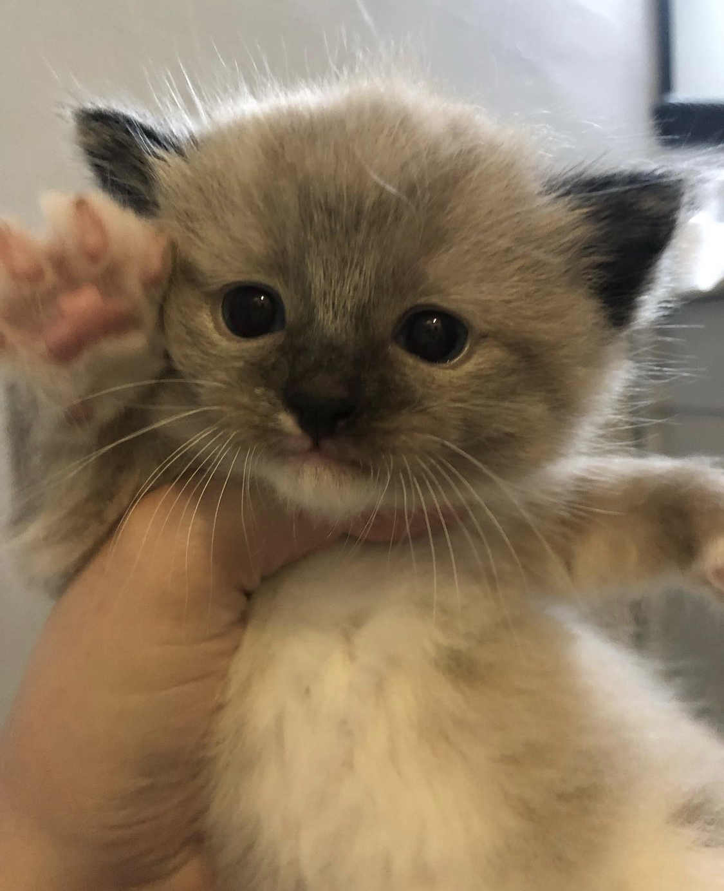
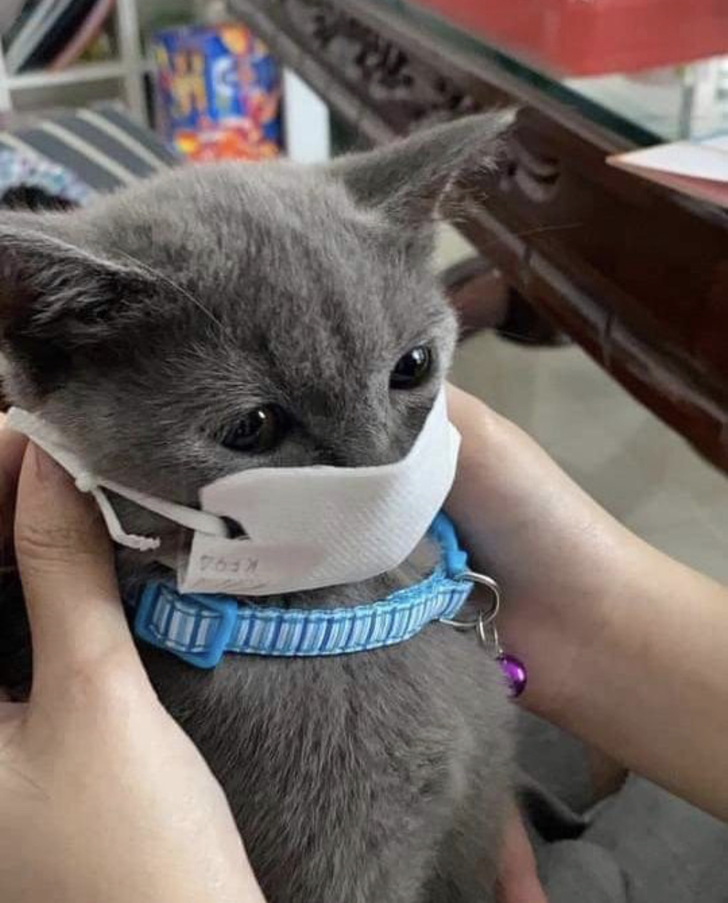

Kitten Korner
Enjoy the cutest kittens!
Share Kitten Pictures!

Our Kitten Media page has a number of adorable kittens that will make it impossible not to smile!
Our Kitten Media page has a number of adorable kittens that will make it impossible not to smile!